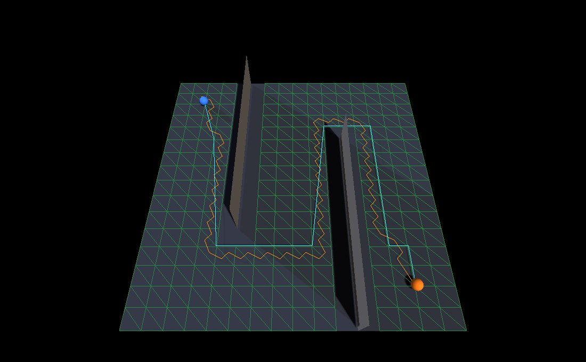

A navigation mesh is the floor, minus
everything nobody can walk on, cut into cells that know their neighbours. Give
it two points and it answers with a route.
OpenGLContext.nav.navmesh builds one out of a level's
collision mesh — the triangles a character's capsule is already
tested against — and searches it.
from OpenGLContext.nav import navmesh navmesh.build(points, triangles) # walkable cells out of a triangle soup navmesh.from_world(world) # the same, from a physics world mesh.cell_at(point) # which cell a point stands on mesh.path(start, goal) # the route, pulled taut mesh.random_point() # somewhere to go
The mesh is derived from geometry that is already in memory when the level is, rather than read from navigation data shipped alongside it. Three things follow from that, and they are the reason it is built this way:
The cost is paid at load: build time is proportional to the triangles handed in, and the result is held in memory as arrays.
build(points, triangles, max_slope, clearance)points is (N, 3) world positions in metres and
triangles is (M, 3) indices into them — a
triangle soup, which is what a level's collision geometry is. The answer is a
NavMesh, and len(mesh) is how many walkable cells it
found.
A triangle becomes a cell when it faces upward and is no steeper than
max_slope. Facing upward is separate from being flat: a
downward-facing triangle is a ceiling however level it is, and is dropped.
Cells are joined into neighbours by shared edge, matched on position rather than on vertex index. A collision mesh is a soup in which the same corner arrives once per triangle that touches it, each time with a different index, so matching indices would leave every cell an island. Positions are welded on a 0.1 mm grid — below anything a level distinguishes, above the drift of transforming a mesh into world space. The shared edge between two neighbours is kept as a portal, which is what the string pull later runs the line through.
from_world(world, max_slope, clearance)The seam a game uses. It walks the bodies of an
omi_physics world, takes every static trimesh collider, offsets each
by its body's position, and builds one mesh from all of them. The character
walks on the collision mesh, so the navmesh comes from the collision mesh: a
second description of the same geometry is a second description that can
disagree.
A world with no static trimesh in it gives an empty NavMesh
rather than an error — len(mesh) == 0, and every query
against it answers "nowhere".
| Name | Default | Unit | What it decides |
|---|---|---|---|
DEFAULT_MAX_SLOPE | 50.0 | degrees from horizontal | The steepest triangle that becomes a cell. |
DEFAULT_CLEARANCE | 0.0 | metres of headroom | How much room over a cell a body needs; 0 asks no question. |
STAND_REACH | 2.5 | metres | How far
below a point cell_at looks for its floor. |
STAND_TOLERANCE | 0.5 | metres | How far above a point its floor may be and still count. |
A navmesh is built for a particular body. The slope one
character can climb is not the slope another can, so max_slope is
an argument rather than a constant, and a game passes its avatar's own
CharacterCapabilities.maxSlope — which is likewise 50
degrees until a game says otherwise, and is the same number the walking code
asks of a surface before it will stand on it. See
Physics for the rest of that body's
description.
clearance is what makes a wall an obstacle. A wall contributes
no walkable triangles of its own, so the floor either side of it is floor, and
without a headroom test the two halves are joined straight through it. The test
overlaps a cell's bounding box against the unwalkable triangles' boxes, because
a wall in a level is a plane of zero thickness that a point test passes
through. It removes the floor immediately against a wall as well, which is
right: a body has a radius and cannot stand there.
It is off by default, at clearance=0.0,
because comparing bounding boxes is blunt on the large triangles a real level's
walls are made of: on the oa_dm1 map it removes 1092 of 1220 floor
cells, most of them nowhere near a wall. On small, axis-aligned geometry it is
exact, and a caller who knows their geometry passes the height their body
needs. Everyone else gets the whole walkable floor.
cell_at(point, reach, below)The cell a point is standing on, as an index into mesh.cells,
or None. The cell under the point: height is what tells
two floors stacked over one another apart, so a gallery and the hall beneath it
give different answers for the same (x, z). A point more than
reach above any floor belongs to no cell, which is how a point in
mid-air over a pit avoids binding to the bottom of it. A little below counts
too, by below, since a capsule's centre sits above the floor and a
sloped plane runs either side of a sample taken from the triangle next
door.
path(start, goal)A list of (x, y, z) points to walk, starting at
start and ending at goal. A* over the cells finds the
corridor, and the corridor is then pulled taut through its
portals.
An empty list is the answer when either end is off the mesh or nothing connects them. That is a normal reply rather than an error: a bot on a ledge with no way down has nowhere to walk and should do something else.
random_point(seed)A cell centre, drawn at random — what a bot with no orders walks
toward. With a seed it is one fixed answer, so a match replays from
its inputs. Without one it draws from the session's navigation entropy stream,
which advances: a bot asking twice wants somewhere else to go.
A* answers with cells, and the obvious route through cells is their centres. That route zigzags: triangle centres are not on the line anybody would walk, so a bot crossing an empty room walks a staircase and rounds corners that are not there.
The pull runs a funnel through the portals instead. Two edges of a cone are narrowed by each portal in turn and a corner is planted where they cross, which leaves a line that touches the geometry only where the geometry actually turns it — and on open floor collapses to two points, start and goal.
It is a horizontal operation. Height comes from the portals the line passes through, so a route up a ramp climbs with it; what is pulled straight is the plan.

python tests/navmesh_demo.py
— a 16 m room whose two walls make the way through a zigzag.
The green wireframe is the navmesh: 416 walkable cells out of the 516
triangles of floor and wall handed to build(), with the dark
bands beside each wall the cells clearance=1.8 removed. Amber
is the raw cell-centre route, cyan the same route string-pulled. Press
g for the next goal, r for a random one.Each re-path prints what the search cost and what the pull saved:
$ python tests/navmesh_demo.py navmesh 416 walkable cells from 516 triangles (max slope 50.0 degrees, clearance 1.8 m) goal (14.0, 14.0) | search visited 333 cells | corridor 77 cells centres 79 points 48.82 m -> pulled 11 points 37.30 m (-23.6%)
Seventy-nine points of zigzag become eleven, and the walk is 11.5 m shorter — on a route whose corners are two wall ends.
From triangles in hand:
import numpy as np from OpenGLContext.nav import navmesh # A four-metre floor, as two triangles wound to face up. points = np.array([(0, 0, 0), (4, 0, 0), (4, 0, 4), (0, 0, 4)], dtype='d') triangles = np.array([(0, 2, 1), (0, 3, 2)], dtype='i') mesh = navmesh.build(points, triangles) len(mesh) # 2 mesh.cell_at((1.0, 0.0, 1.0)) # 0 mesh.cell_at((9.0, 0.0, 9.0)) # None -- off the mesh mesh.path((0.5, 0.0, 0.5), (0.5, 0.0, 3.5)) # [(0.5, 0.0, 0.5), (0.5, 0.0, 3.5)]
From a loaded level, which is the usual way:
from omi_physics import model
from omi_physics.world import PhysicsWorld
from OpenGLContext.nav import navmesh
world = PhysicsWorld(gravity=model.Gravity(gravity=9.81, direction=(0, -1, 0)))
shape = world.add_shape(model.Shape.trimesh(points, triangles))
world.add_body(model.Motion(type=model.STATIC),
collider=model.Collider(shape=shape), position=(0, 0, 0))
mesh = navmesh.from_world(world, max_slope=50.0)
len(mesh) # 2 -- the same floor, found in the world
mesh.random_point(seed=3) # (2.6666666666666665, 0.0, 1.3333333333333333)
A bot then asks mesh.path(bot.position, mesh.random_point())
whenever it wants somewhere new to be. Build once per level, hold the
NavMesh, and call path() per decision rather than per
frame: a bot follows the points it was given until it wants somewhere
else.
clearance test removing the cells against them,
which is a property of the build rather than of the character asking for the
path.clearance is left at 0 and
the whole walkable floor is returned.cell_at scans the cells. The lookup tests
every cell's footprint, so it is linear in the mesh; a level large enough for
that to matter wants an index over the cells.